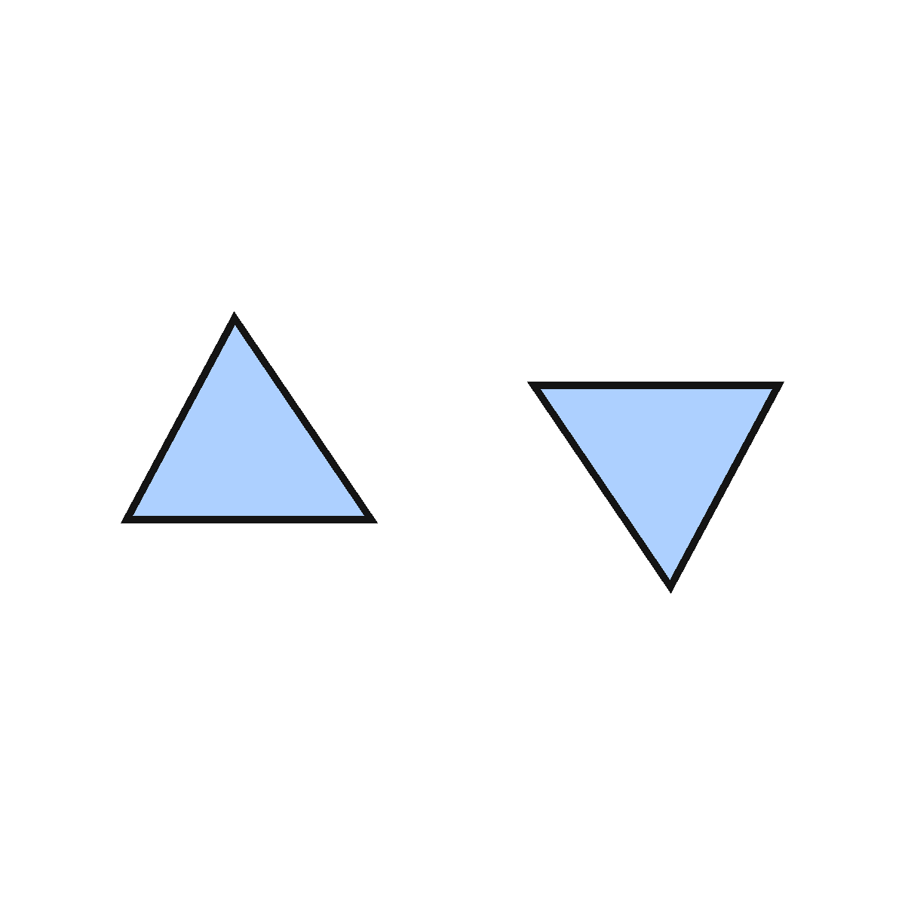
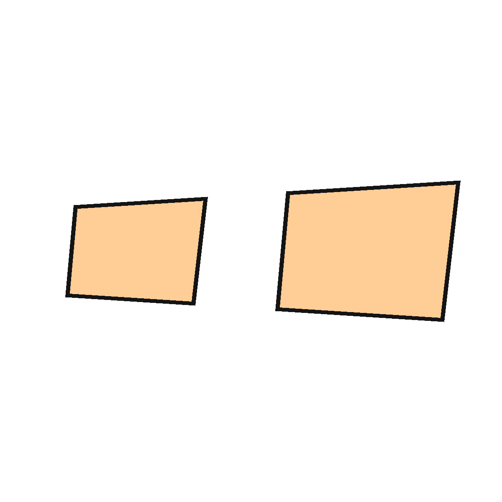
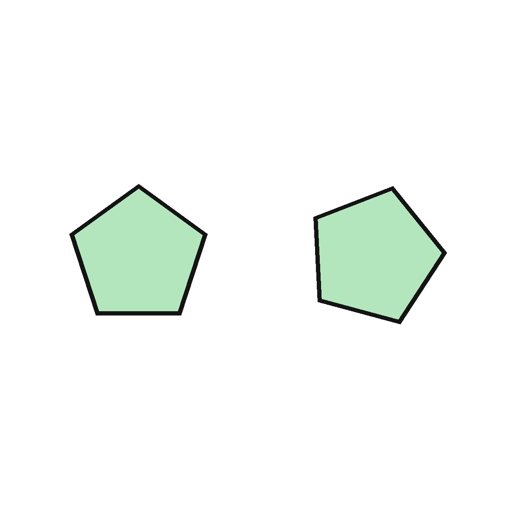
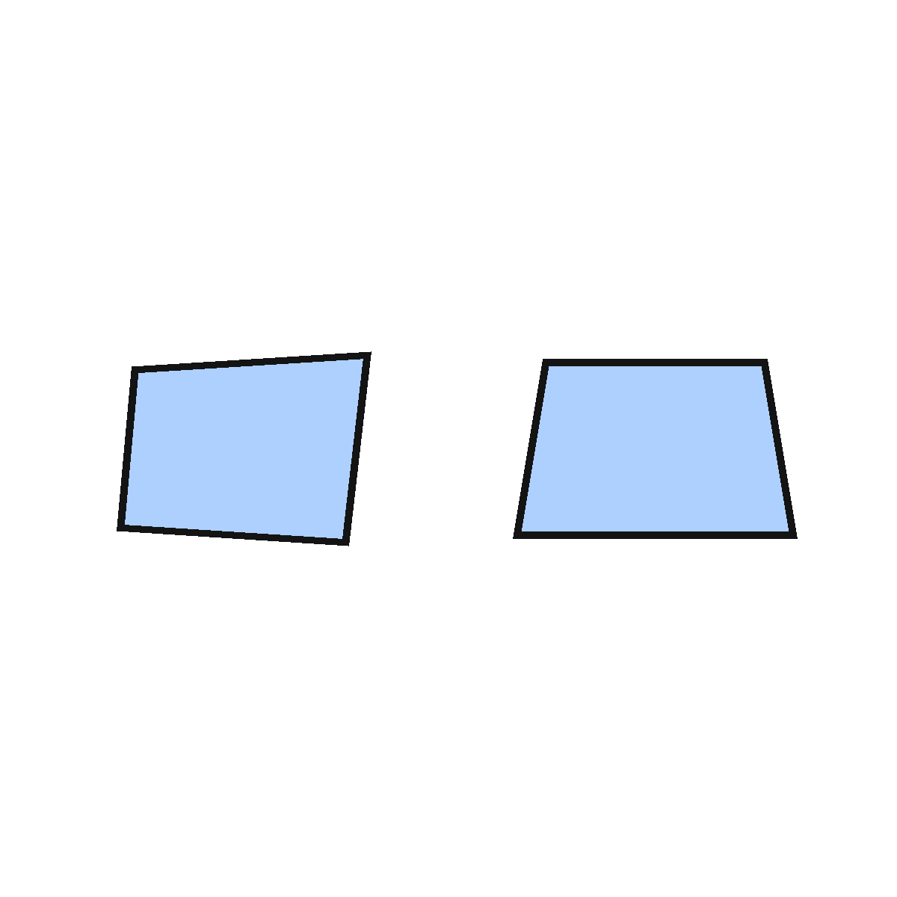
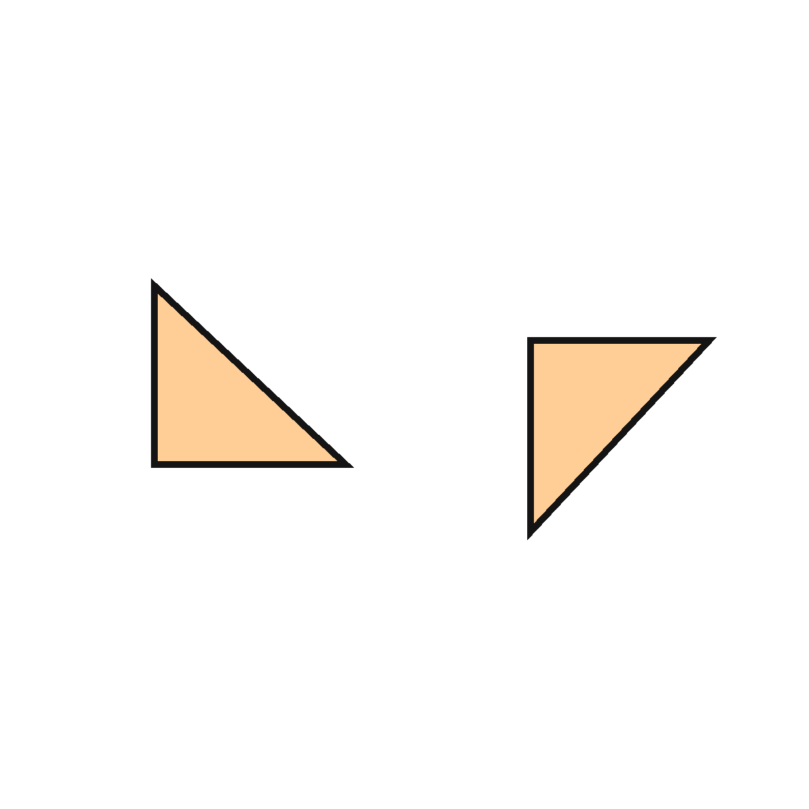
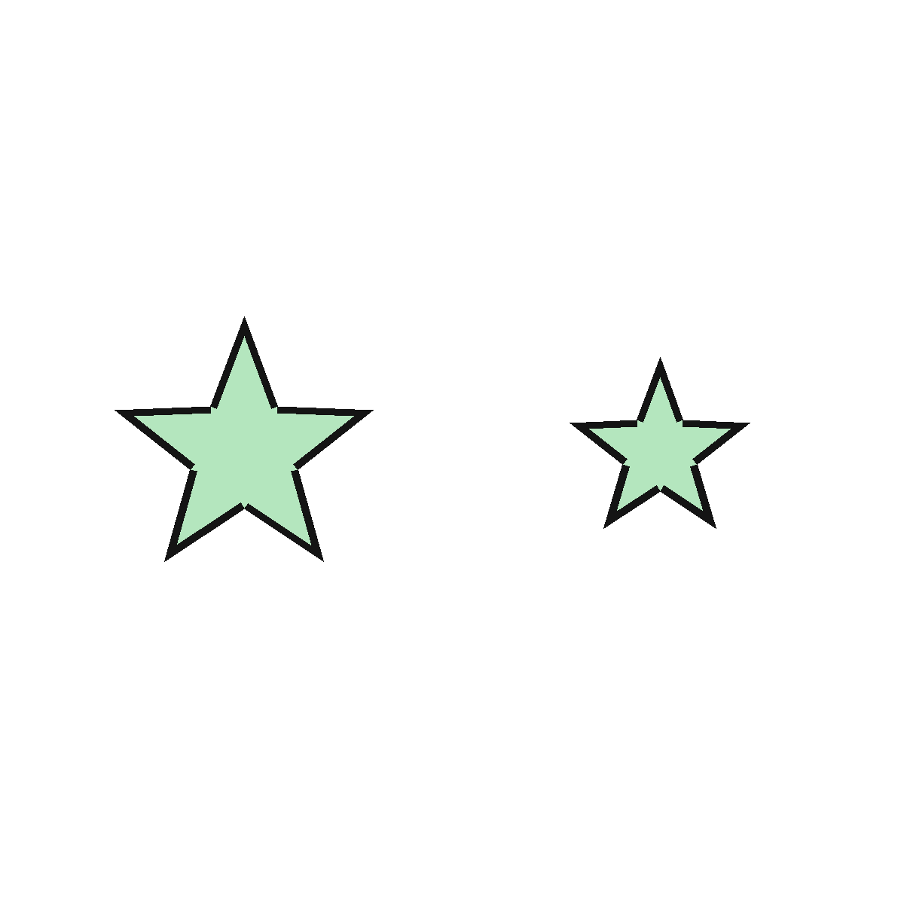
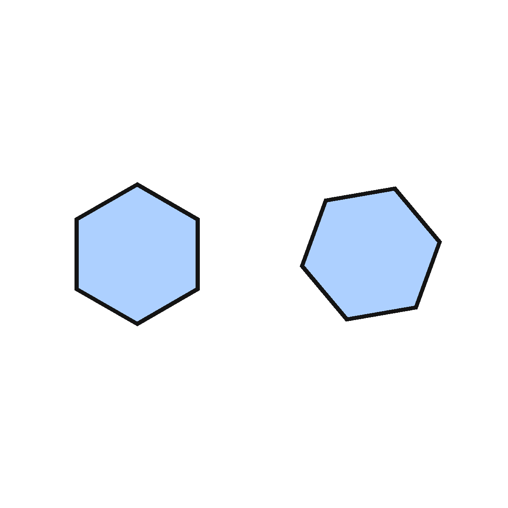
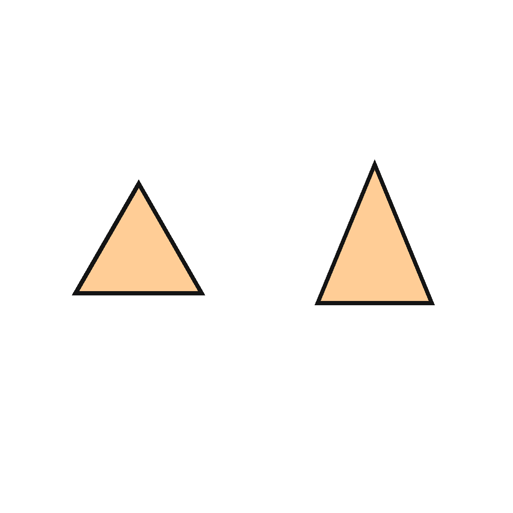
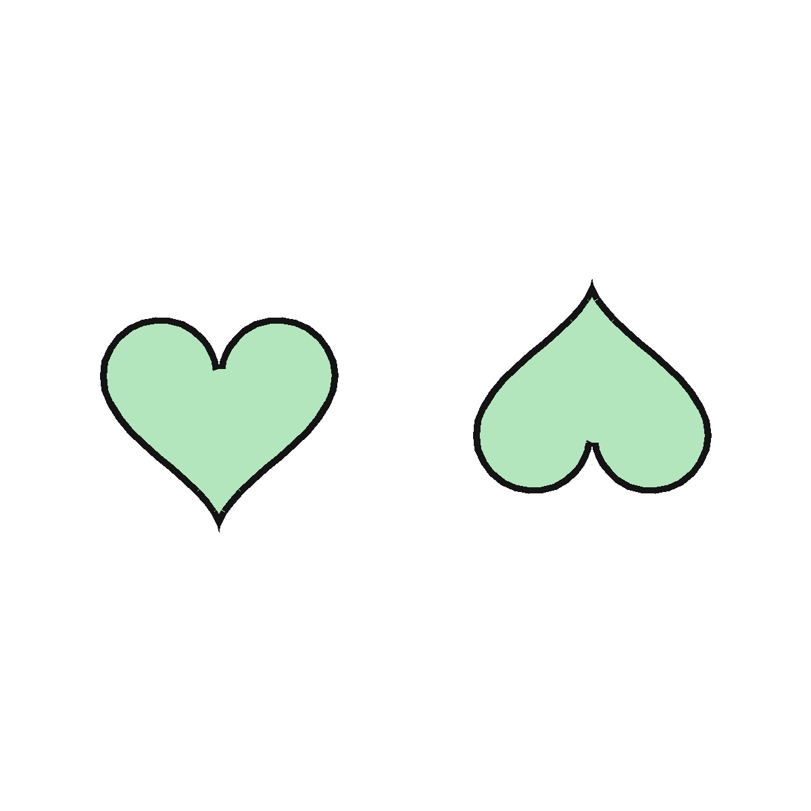
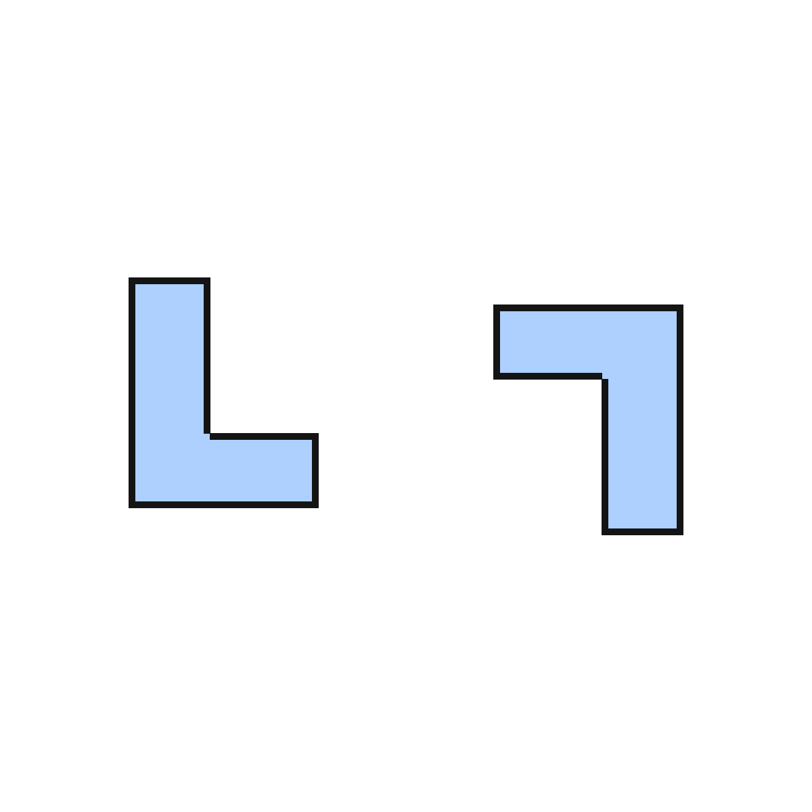

1편 · 합동 탐정 — 완전히 포개지는 짝을 찾아라
비상 수학 5-2 3단원 합동과 대칭 · 도형의 합동 · 40분 · 2026-10-19 게시
학습 목표
- 모양과 크기가 같아 포개었을 때 완전히 겹치는 두 도형을 합동이라 부를 수 있다.
- 생활 장면과 그림에서 합동인 도형을 찾고, 합동이 아닌 이유를 말할 수 있다.
설계 의도
합동은 "모양과 크기가 같다"는 정의를 외우면 쉬워 보이지만, 아이들은 크기만 다른 닮은 도형과 뒤집어 놓은 도형에서 자주 흔들립니다. 그래서 정의를 먼저 주지 않고, 비상 AIDT에서 도형을 끌어 포개 보는 몸의 감각으로 합동을 발견하게 했습니다.
그다음 일부러 헷갈리게 만든 그림 10장에서 "이건 왜 합동이 아니지?"를 크기와 모양이라는 말로 설명하게 합니다. 여기서 AI는 정답을 주는 도구가 아니라 문제를 만들어 주는 상대입니다. AI가 '같다'고 해 놓고 다르게 그린 그림도 버리지 않고 함정 카드로 씁니다.
그림 10장은 꾸러미에 들어 있고, 더 만들고 싶으면 교사가 제미나이로 추가 세트를 만듭니다. 학생은 AI 계정이 필요 없고, 개인정보도 수집하지 않습니다.
40분 흐름
| 분 | 단계 | 교사 | 학생 | 자료 |
|---|---|---|---|---|
| 0~5 | 도입 '쌍둥이 찾기' | 똑같아 보이는 그림 두 장을 띄우고 "완전히 똑같은가?" 투표. 한 장은 살짝 작게, 한 장은 뒤집혀 있음 | 손들기 투표, 이유 한 마디 | 덱 |
| 5~15 | 개념 AIDT 포개 보기 | 도형을 끌어 포개는 조작 활동 → "완전히 겹친다"를 합동이라 명명. 뒤집어서 겹쳐도 합동임을 조작으로 확인 | 도형 이동·회전·뒤집기, 겹침 확인 | 비상 AIDT |
| 15~35 | 활동 합동 탐정 (모둠) | 그림 10장. 1단계 합동인 쌍에 ○, 2단계 아닌 쌍은 이유 쓰기(크기 / 모양 / 둘 다), 3단계 "그림 중 함정은 몇 번?" 모둠 발표 | 탐정 활동지, 트레이싱지로 포개 확인 | 활동지, 트레이싱지 |
| 35~40 | 정리 AIDT 평가 + 한 줄 | AIDT 형성평가 2~3문항. "합동은 ___와 ___가 같아서 포개면 완전히 겹치는 것" 빈칸 채우기 | 개별 평가, 한 줄 정리 | AIDT, 덱 |
내려받기
- 수업 덱 (PPTX)12장 · 고쳐 쓰기용
- 수업 덱 (PDF)12장 · 바로 띄우기용
- 활동지 (PDF)A4 앞뒤 · 모둠당 1장
- 교사용 흐름 (PDF)흐름표 · 정답표 · 프롬프트
프롬프트 카드 (교사용 · 제미나이 이미지 생성)
기본 그림 세트(img 01~10)는 꾸러미에 포함되어 있고, 아래 프롬프트는 추가 세트를 만들 때 씁니다. 1·4·5 유형 5장과 2·3 유형 5장을 섞어 번호만 붙입니다.
1. 합동 쌍
흰 배경에 단순한 평면 도형(삼각형·사각형·오각형 중 하나) 두 개. 두 도형은 모양과 크기가 완전히 같고, 하나는 180도 회전해 놓았다. 선 굵기 같은 색 두 가지. 글자 없음.
2. 함정 A (크기만 다름)
...두 도형은 모양이 같지만 하나가 1.3배 크다...
3. 함정 B (모양이 조금 다름)
...두 사각형, 크기는 비슷하지만 한 각의 크기가 다르다...
4. 함정 C (뒤집음 — 사실은 합동)
...하나는 좌우로 뒤집어 놓았다. 모양과 크기는 같다...
5. 생활 장면
교실 바닥 타일, 창문 유리, 책꽂이의 같은 책 등 합동인 사물 쌍이 보이는 단순한 삽화. 사람 얼굴 없음.
그림 10장









